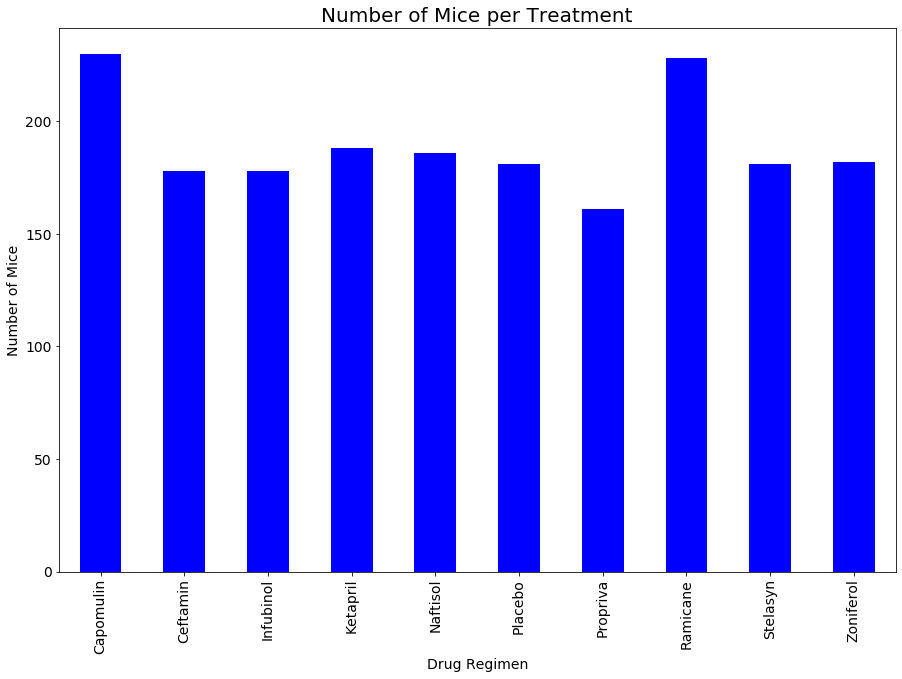
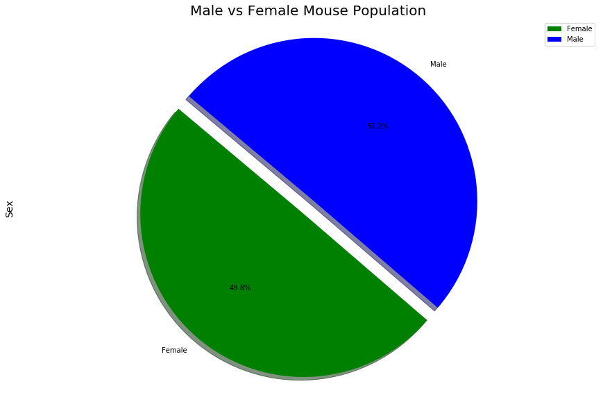

Mean baseline weight by regimen
Green: the two best-performing regimens.
An animal study of squamous cell carcinoma (SCC): mice received one of ten drug regimens, including a placebo, and tumour volume was tracked over 45 days. Cleaned, analysed and visualised with Pandas and Matplotlib.
Results
Capomulin and Ramicane had the smallest final tumour volumes of the four regimens compared medians about 36–38 mm³, versus about 60 mm³ for Infubinol and Ceftamin. See the box plot.
For mice on Capomulin, body weight strongly predicts average tumour volume: R² ≈ 0.70, about +0.95 mm³ per gram. See the regression.
Capomulin has the most tumour measurements (230) and Propriva the fewest (about 160) regimens with more measurements kept more mice in the study for longer. See the counts.
The population is balanced by sex (124 female, 125 male), so sex is unlikely to bias the comparison. See the split.
Interactive · from mouse_metadata.csv
Charts built live from the 249-mouse dataset.
Green: the two best-performing regimens.
About 25 mice per regimen (Stelasyn: 24).
Ages 1–24 months, mean 12.7.
Search, filter and export all 249 mice by regimen and sex.
Open the data tableOriginal Matplotlib figures




How it was done
Combined the study data in Pandas and removed a mouse with duplicated timepoint records, leaving 248 mice for the treatment analysis.
Summarised measurements by regimen and sex with Pandas groupby operations.
Bar, pie and box plots in Matplotlib; outliers beyond 1.5×IQR shown as points.
Linear regression of mouse weight on average tumour volume for Capomulin (R² ≈ 0.70).
Online
Answers come from this project's results and a data-science knowledge base.